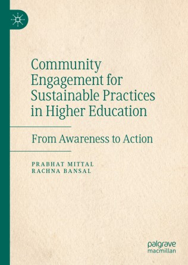

Working with government bodies, public sector undertakings, CSR foundations and implementing agencies to design community programmes, measure their social impact and report results credibly — including the statistical and analytical work that such studies require.
Community profiling, baseline surveys and situation analysis to identify where CSR funds will create the greatest social value.
Theory of change, logical frameworks, indicator design and measurement plans aligned with the Sustainable Development Goals.
Monitoring systems, field data collection protocols, dashboards and periodic progress reviews for ongoing interventions.
Rigorous impact evaluation using quasi-experimental and longitudinal designs, with statistically defensible estimates of outcomes.
Independent evaluation of implemented projects, including beneficiary verification, outcome measurement and reporting.
Design of university–community engagement models that connect CSR projects with student volunteers, internships and field research.
Pathways to socio-economic prosperity through sustainable development in the North-East region of India. Sponsored by ICSSR under the Viksit Bharat@2047 special call.
Environment and sustainability campaigns in higher education institutions. Sponsored by the Indian Council of Social Science Research (ICSSR).
For ASK Training and Learning Pvt. Ltd. and International Justice Mission, Chennai.
Sponsored by the Bureau of Police Research & Development (BPR&D), Government of India.
Government scheme evaluation in Himachal Pradesh, sponsored by the Himachal Institute of Public Administration (HIPA), Shimla.
A study of selected districts of Himachal Pradesh, sponsored by the University of Delhi.
A comparative study of Banswara (ST), Ganganagar (SC) and Alwar (General) districts, sponsored by the University of Delhi.
National survey on a consumer-friendly cable TV system, sponsored by the Ministry of Consumer Affairs; and the national survey on rational use of drugs, sponsored by the World Health Organization.
Sponsored studies and CSR assignments carry their own analytical demands. The following methods form part of the project work described above, and are also available as a separate component of a government-sponsored or CSR-funded study.
Study design, sample size determination, sampling plans for large field surveys and selection of the appropriate statistical tests.
Questionnaire design, pilot testing, reliability and validity assessment, exploratory and confirmatory factor analysis.
Data cleaning, weighting, descriptive and inferential analysis, regression and categorical models, with clearly written interpretation.
Quasi-experimental designs, difference-in-differences, propensity score matching and longitudinal analysis for programme evaluation.
Covariance-based and PLS-SEM, mediation and moderation analysis, multi-group comparison and model fit diagnostics.
Scopus and Web of Science data retrieval, co-occurrence and co-citation mapping, and PRISMA-based systematic review support.
Numbers alone rarely explain why a community programme works. Survey and administrative data are combined with focus group discussions, key informant interviews, field observation and case accounts, so that measured outcomes are read alongside the experience of participants. Qualitative findings are coded and triangulated against the quantitative results, and both are reported together — sequential designs where a survey follows fieldwork, or parallel designs where the two run side by side and are compared at the analysis stage.
| Statistical packages | SPSS, AMOS, SmartPLS, EViews, Minitab, STATA, SAS Enterprise |
|---|---|
| Programming | R, Python, Base SAS |
| Data handling & reporting | MS-Excel, Mendeley, LaTeX |
Assignments are accepted from government departments and undertakings, public institutions, sponsoring research councils, CSR foundations and their implementing partners, with the approvals required of a serving faculty member of the University of Delhi. Analysis is reported as it is found, and authorship or acknowledgement is agreed in advance.

From Awareness to Action — Prabhat Mittal & Rachna Bansal. Springer (Palgrave Macmillan), 2024, 279 pages.
The book sets out how universities, students and communities build sustainable practices together: partnership models, campus-to-community campaigns, measurement of outcomes, and the barriers to scaling. It is the framework behind the CSR assignments described on this page.
CSR assignments also draw on the following published research:
Government departments and undertakings, public institutions, CSR foundations and implementing partners are welcome to write with a brief outline of the project, its location, the communities involved and the kind of study or analysis required. An approach note and work plan can then be prepared.